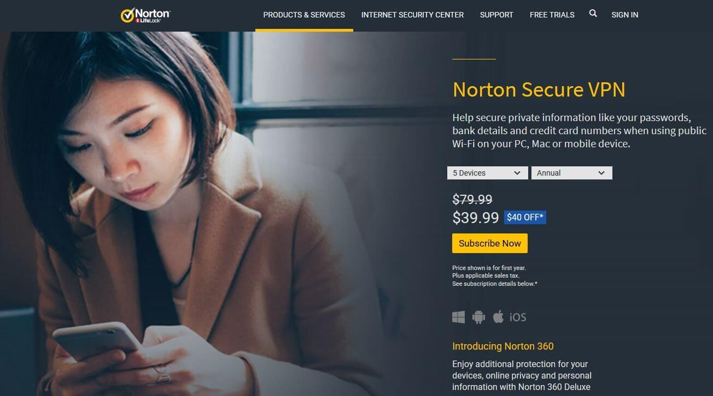

OVPN Review
7.5
Good
Our verdict: Although OVPN is not fully featured like other Virtual Private Network (VPN) products, it is a good choice for users with less-demanding VPN needs. It provides good value to single device users and is compatible with the award-winning Norton Security Suite.

Unique Advantages
• Sturdy Server Network
• Great Geographic Server Diversity
• Adaptable Pricing
• Subtle presence on the desktop
• Discount with the Norton Security Suite
• Live Chat Support
Company Background
Norton (also known as Norton by Symantec), is a division of the American software company Symantec Corporation. Norton’s parent company, Symantec is a leading digital security solutions provider and is enlisted in the Fortune 500 list. Since being acquired by Symantec in 1990, Norton has developed a range of products and services related to software security.
Awards & Prizes
OVPN is a subsidiary service of the acclaimed brand – Norton by Symantec. Time and time again, the digital security company has proved its mettle on the global stage:
- In 2012, Norton received the Best Security Software award by PC Advisor.
- Norton by Symantec won AV-TEST’s Innovation Award for Mobile Security in 2015.
- Norton Mobile Security and Norton Family Premier were also acclaimed by PC Magazine’s, Editor’s Choice Awards in 2015.
Server Locations
Most public Wi-Fi connections are not secure and offer little protection against malicious users. A VPN gives its users online privacy and anonymity. It is an essential security layer to protect your private data and avert hackers from eavesdropping on your network traffic. It achieves this by encrypting your data and rendering your connection through a secure and anonymous server.
It’s important for VPNs to have a diverse distribution of servers across the world. OVPN has a fairly impressive network of 73 server locations spanning 29 countries. Though the server locations don’t feature countries like China and Russia; the list expands to geographically distributed countries like Australia, Turkey, South Africa, Israel, Brazil, Mexico, Japan and countries in Eastern Europe.
The number of locations VPN networks operate on varies across companies. If you’re hoping for a greater number of locations, you should consider other options. CyberGhost is distributed across 90 countries; Nord VPN covers 63 countries while Express VPN spans 93 countries.


Speed and Reliability
Having a secure connection shouldn’t mean that you have to compromise on the speed and reliability of your connection. Norton VPN provides a fast service for its consumers and has an express speed for local connections. TechRadar conducted speed tests to measure the VPN’s performance against a 75Mbps connection. Servers in the UK rev up to download speeds of 60-66 Mbps. Servers located in European countries nearby also have fairly fast speeds, ranging between 50-65 Mbps.
On the same connection, a server in the US fared between 45-65Mbps. Though speeds in distant locations like Australia and Mexico (15-25 Mbps & 8-18 Mbps respectively) were fairly low; they are sufficient for most users.
These statistics are for a single connection. The VPN performance varies according to the strength of the connection you’re using.
Platforms and Devices


Norton VPN enables secure web browsing on all devices that have one of the following operating systems:
• All versions of Microsoft Windows 7 with Service Pack 1 or later.
• All versions of Microsoft Windows 8/8.1.
• All versions of Microsoft Windows 10 except Windows 10 S. Edge browser not supported as well.
• Mac OS X, the current and previous two versions.
• All Android phones with Android 4.1 or higher.
• All iPhones or iPads that run on the current and previous two versions of Apple iOS.
Works With
The Norton VPN works well for users who use standard and official applications in all Windows, Mac, iOS and Android operating systems. On other platforms and devices, the VPN has limited compatibility.
Using torrent applications is considered unethical by some people. As torrent is considered illegal in many countries, legal action can be taken against torrent sites. Norton has banned the use of all P2P services and doesn’t cater to BitTorrent as well. If being able to torrent is a feature you cannot miss, you should consider other VPNs like CyberGhost or NordVPN. You will still get to access official services like Netflix and YouTube securely.
Pricing
The annual cost of a single license is $39.99. Five devices have a greater value costing $39.99 for one year as well. A secure VPN’s ten device license costs $59.99 initially.
The price is relatively cheap compared to other VPNs and what makes it even more attractive is when you bundle the Norton VPN with their antivirus offering. Users can get a sweet deal if they go for the Norton Deluxe 360 bundle which includes their VPN. You can give 5 devices award-winning antivirus protection along with VPN protection for up to a year at just $49.99.
The company doesn’t offer a free product to test its service but provides its customers with a remarkable 60-day money back guarantee. However, the money back guarantee is regulated under some terms and conditions, so it’s best to check them first.
Encryption & Logging Policy
Norton’s Secure VPN website policy claims that the service caters a no-log virtual private network. This means the service doesn’t track or store your activity.
The Bottom Line
OVPN offers its consumers adaptable pricing, a strong network of servers and the brand assurance of a digital security giant. Though it lacks some advanced features, for a user with simple VPN needs, especially those who want to also add a great antivirus, Norton Deluxe 360 with Secure VPN is a worthy choice.
OVPN User Reviews